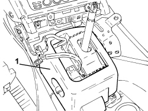
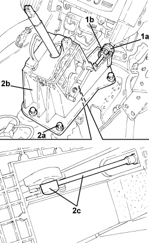

2135A10 AUTOMATIC TRANSMISSION MANUAL CONTROL LEVER AND SUPPORT - R + R AND OVERHAUL
- Path
- Procedures > 21 GEARBOX UNIT > 2135 AUTOMATIC TRANSMISSION EXTERNAL CONTROLS > 2135A AUTOMATIC TRANSMISSION MANUAL CONTROLS > 2135A10 AUTOMATIC TRANSMISSION MANUAL CONTROL LEVER AND SUPPORT - R + R AND OVERHAUL
- Kind
- repair procedure (removal / refitting; the operation number is the code)
- Applies to
- engines: 3.2 JTS; all production periods
- Interactive page
- https://sloeber94.github.io/elrnDB-aBrrSpdr/en/#/946004465
Applies to: engines: 3.2 JTS; all production periods
 Removing
Removing
 Refitting
Refitting- Move the gear selector to position "N".
Op. 2135A16 AUTOMATIC TRANSMISSION LEVER HANDLE - R R
- Remove the gear lever surrounding trim, refer to
Applies to: engines: 3.2 JTS; all production periods
Op. 7045A10 FRONT SEAT (ONE), LEFT OR RIGHT - R.R.
(left and right sides).
Op. 7040L37 GEAR LEVER TRIM - R.R
Op. 3380A44 HANDBRAKE/LINKAGE PROTECTION - R+R
Op. 7040L20 TUNNEL COVER - R.R
Op. 7040L23 TRIM ON TUNNEL COVER - R.R.
Applies to: engines: 3.2 JTS; all production periods
1. Remove the sound insulation cover for the gear lever support.

Applies to: engines: 3.2 JTS; all production periods
1. Move the locking bush (1a) backwards and disconnect the gear engagement cable (1b) from the gear lever support.
2. Undo the bolts (2a), lift up the gear lever support (2b) as necessary to disconnect the end (2c) of the gear engagement cable.
- Remove the gear lever support.

Applies to: engines: 3.2 JTS; all production periods
Refitting
Removing- Connect the end of the gear engagement cable, place the gear lever support in position and tighten the fixing bolts to the recommended torque.
- Place the sound insulation cover for the gear lever support in its housing.
Op. 7040L74 TUNNEL TRIM MOUNTING BRACKET/SUPPORT - R.R.
Op. 7040A65 CONSOLE SIDE CLOSING (ONE) - R.R.
Op. 7040L23 TRIM ON TUNNEL COVER - R.R.
Op. 7040L20 TUNNEL COVER - R.R
Op. 3380A44 HANDBRAKE/LINKAGE PROTECTION - R+R
Op. 7040L37 GEAR LEVER TRIM - R.R
Op. 7045A10 FRONT SEAT (ONE), LEFT OR RIGHT - R.R.
(left and right sides).
- Place the gear lever surrounding trim in position, refer to
Topics linked from this page (8)
- 2135A16 AUTOMATIC TRANSMISSION LEVER HANDLE - R R
- 3380A44 HANDBRAKE/LINKAGE PROTECTION - R+R
- 7040A65 CONSOLE SIDE CLOSING (ONE) - R.R.
- 7040L20 TUNNEL COVER - R.R
- 7040L23 TRIM ON TUNNEL COVER - R.R.
- 7040L37 GEAR LEVER TRIM - R.R
- 7040L74 TUNNEL TRIM MOUNTING BRACKET/SUPPORT - R.R.
- 7045A10 FRONT SEAT (ONE), LEFT OR RIGHT - R.R.